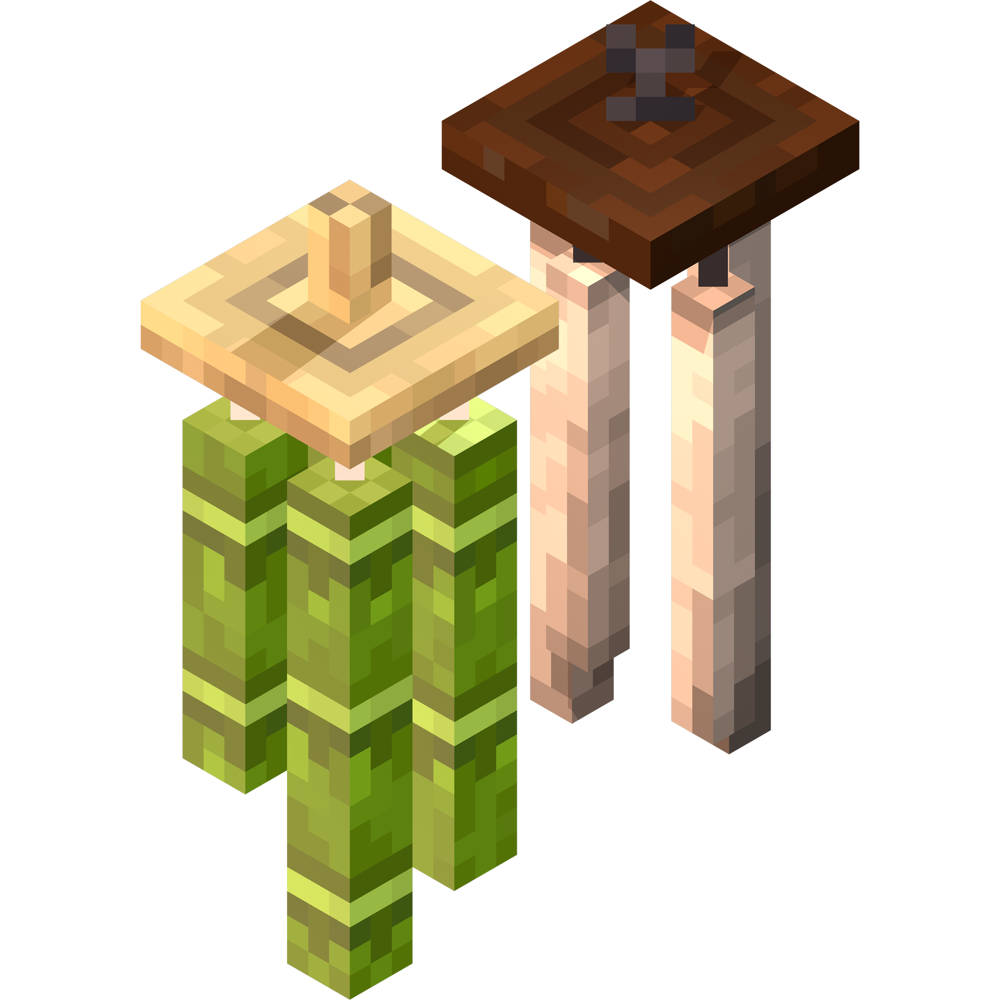

Chime Chimes
共 6 个条目 · chimes
版本: 2.1.1 · 来源: Chimes-v2.1.1-1.21.1-NeoForge.jar
Enjoy and relax to the sound of Wind Chimes in your Minecraft world!
This mod introduces various Wind Chime blocks that produce ambient Chiming sounds when hung.
Use Chimes for your building and adventuring pleasures!
MC百科中文名: Chime
MC百科页面: https://www.mcmod.cn/class/3758.html（Chime）
官方介绍 （Modrinth · 中文版由 GLM AI 翻译，仅供参考）
Chimes（风铃）
为你的 Minecraft 世界增添风铃之声！
Chimes 是一个将风铃（Wind Chimes）引入游戏的 Minecraft 模组。风铃悬挂在支撑方块下时会发出环境音，还能阻止附近的幻翼（Phantom）靠近！
更多详细信息请见下方
风铃方块与合成🎐
目前共有 六种风铃，还计划推出更多！
了解每种风铃的更多信息
>### 竹风铃（Bamboo Wind Chime）： >- 悬挂时会发出竹子咔哒作响的环境音 >- 通过 1 个木质台阶、1 根线和 1 根竹子合成获得 >- 会产生飘落的竹叶粒子 >- 可以系住/静音 >### 铁风铃（Iron Wind Chime）： >- 悬挂时会发出金属质感的氛围音 >- 通过 1 个木质台阶、1 根锁链和 1 个铁锭合成获得 >- 会产生飘落的竹叶粒子 >- 可以系住/静音 >### 雕刻竹风铃（Carved Bamboo Wind Chime）： >- 竹风铃的雕刻变种，除了独特的雕刻外观之外，发出的咔哒声也比普通版本音调更低沉 >- 用斧头右键点击竹风铃即可获得！ >- **不会**产生飘落的竹叶粒子 >- 可以系住/静音 >### 铜风铃（Copper Wind Chime）： >- 悬挂时会发出独特的低沉环境音 >- 通过 1 个木质台阶、1 根线和 1 个铜锭合成获得 >- 可以系住/静音 >### 紫水晶风铃（Amethyst Crystal Wind Chime）： >- 悬挂时会发出晶莹闪烁的环境音 >- 通过 1 个铁锭、1 根线和 1 个紫水晶碎片合成获得 >- 会发出亮度为 7 的光！ >### 玻璃风铃（Glass Wind Bell）： >- 独一无二的风铃……因为它其实是一只“风铃铃”（Wind Bell）！ >- 玻璃风铃从玻璃到风帆都可以完全自定义。 >- 用 1 根线、1 个玻璃瓶和 1 张纸合成一个风铃 >- 在工作台中把染料放在玻璃风铃物品槽位的上方或下方，即可自定义它的外观 >- 手持自定义过的风铃物品右键点击水源方块，即可洗掉染色设计。 > 系住风铃
- 部分风铃可以系住/解开，用来在游戏中开关环境音
- 潜行 + 空手右键点击风铃即可系住/解开它
驱赶幻翼
- 处于风铃一定半径范围内的玩家不会遭到幻翼攻击。
- 你可以系住/解开风铃来开关这一效果
风铃动画
- 每种风铃都配有环境动画和交互动画！
- 在 Forge 版 Chimes v2.0 中，你可以在客户端配置里开关动画
- 未来还会加入更多自定义选项
## 常见问题
- Chimes 支持 Forge、Fabric 与 NeoForge 模组加载器
- 风铃的音量可以在“环境（Ambient/Environment）”声音分类下调节
- 只要保留出处署名，你就可以在自己的整合包中使用 Chimes
由 GLM AI 翻译，仅供参考
查看英文原文（Modrinth）
Chimes
Add the sound of Chimes to your Minecraft world!
Chimes is a Minecraft mod that introduces Wind Chimes into the game. Wind Chimes create ambient sounds when hung from supporting blocks and prevent nearby Phantoms from approaching!
More detailed information can be found in the following
Wind Chime Blocks & Crafting🎐
There are currently six types of Wind Chimes, with more planned to come!
More about each Wind Chime
>### Bamboo Wind Chime: >- Procused ambient Bamboo Clacking sounds when hung >- Obtainable through crafting with 1 wooden slab, 1 string, and 1 bamboo >- Produces falling Bamboo Leaf Particles >- Can be tied/silenced >### Iron Wind Chime: >- Produces ambient metallic sounds when hung >- Obtainable through crafting with 1 wooden slab, 1 chain, and 1 iron ingot >- Produces falling Bamboo Leaf Particles >- Can be tied/silenced >### Carved Bamboo Wind Chime: >- A carved variant of the Bamboo Wind Chime that produces a deeper-pitched clacking sound compared to its counterpart in addition to its carved model >- Obtainable by right-clicking a Bamboo Wind Chime with an Axe! >- Does **not** produce falling Bamboo Leaf Particles >- Can be tied/silenced >### Copper Wind Chime: >- Produces unique deep-pitched ambient sounds when hung >- Obtainable through crafting with 1 wooden slab, 1 string, and 1 copper ingot >- Can be tied/silenced >### Amethyst Crystal Wind Chime: >- Procused ambient shimmering sounds when hung >- Obtainable through crafting with 1 iron ingot, 1 string, and 1 amethyst shard >- Emits light at a level of 7! >### Glass Wind Bell: >- A Wind Chime like no other,,, that it's a Wind Bell! >- Glass Wind Bells are fully customizable from Glass to Windsail. >- Craft a Wind Bell with 1 string, 1 glass bottle, and 1 paper >- Customize your Wind Bell by applying a Dye above or below the slot of a Glass Wind Bell Item in a crafting table >- You can wash off your design by right-clicking on a water source block with a customized Wind Bell Item in hand. > Tying Wind Chimes
- Some Wind Chimes can be tied/untied to toggle on/off ambient sounds in-game
- You can tie/untie a wind chime by crouching + right-clicking a Wind Chime with an empty hand
Keep Phantoms away
- Phantoms do not attack players who are within a certain radius of a Wind Chime.
- You can tie/untie Wind Chimes to toggle this effect
Wind Chime Animations
- Each Wind Chime is set with ambient and interactive animations!
- For Chimes v2.0 on Forge, you can toggle animations on an off in the client config
- More customization options will be introduced in the future
## FAQ
- Chimes supports Forge, Fabric, and NeoForged mod loaders
- Wind Chime volume can be controlled under the Ambient/Environment Sound Category
- You may use Chimes in your mod pack as long as credit is kept.
资料来源：Chimes